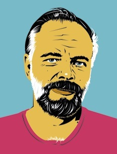
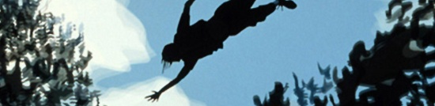
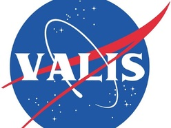

|
La Exégesis de Philip K.Dick
Autor : yemeth
|
“En el centro de la psicosis la encontré: bella y amable, y sobre todo, sabia, y a través de toda aquella sabiduría, acompañándome y guiándome a través del inframundo, a través del viaje por el Bardo Thödol hacia el renacimiento. Ella, la encarnación de la inteligencia: Palas Atenea en sí misma. Así, en el núcleo de una mente y una vida hechas añicos, se halla este equicentro de calma y armonía. La amo, y ella es mi guía”.
-- Philip K.Dick

Se ha escrito bastante acerca de la experiencia del escritor de ciencia ficción Philip K.Dick centrada en el 3 de Febrero de 1974, pero poco le ha hecho verdadera justicia. En gran medida se ha tratado de impresiones de gente que le trató ocasionalmente, que le vio muy perdido, o muy lunático, o muy convencido de una u otra explicación a sus experiencias místicas.
La historia vulgar cuenta como a Philip le quitaron una muela del juicio y tenía que utilizar una cantidad enorme de anestesiante para poder soportarlo. Una chica joven llamó a su puerta para entregarle la medicación, y él quedó fascinado con el colgante de ella, el colgante de un pez, que ella le contó que pertenecía a los primeros cristianos. Tuvo entonces una serie de visiones en las que ambos estaban viviendo en Roma en el año 70 d.c. y que eran cristianos en secreto, ocultándose del imperio.
Un mes después y durante casi un año, Philip K.Dick empezó a ver el mundo bajo el aspecto del apocalipsis cristiano, entremezclándose ambas realidades. PKD -de nuevo según la historia oficial- acabó años después desquiciado y pensando que un nuevo salvador había nacido en la India.
Sin embargo, cuando uno se acerca a leerle directamente, la cosa cambia bastante. Y se le puede leer directamente, porque escribió una decena de tomos intentando explicarse a sí mismo qué diablos le sucedió cuando la realidad se rompió a su alrededor y empezó a parecerse demasiado a su novela “Ubik”. A partir de estos tomos, se realizó una edición más breve en 2011 (un volumen de cerca de un millar de páginas), a partir del cual puede uno entender mucho mejor lo que le sucedió a PKD, y cómo no estaba tan perdido y trastornado como muchos pensaban.
Lo primero que es necesario aclarar es que no existe una única explicación de PKD a sus experiencias místicas. A menudo se piensa que él estaba convencido de cosas muy concretas, de visiones pseudocristianas, de que creía como totalmente literal la mezcla entre sus visiones sobre Roma y el mundo actual, etcétera. Y sucede totalmente al revés: a lo que se dedica el autor durante los ocho años que restan hasta su muerte es a trazar hipótesis de manera febril. Pareciera que las cambia cada día, con una inagotable imaginación que solo puede pertenecer a uno de los autores de ciencia ficción más imaginativos del Siglo XX. Un día su explicación trata de una forma de inteligencia extraterrestre capaz de vivir en cuatro dimensiones que ha penetrado nuestro mundo, y mañana se trata de que nuestro universo está evolucionando de modo que ha dado lugar a una nueva forma de inteligencia, no creadora sino resultado del desarrollo de nuestra realidad. Al día siguiente tomará dogmas cristianos y los adaptará a lo que experimentó hablando de la segunda venida de Cristo, y otro día será el gnosticismo o ideas orientales.
Una cuestión destacable es que PKD no está aquí tomando un conjunto de ideas previamente presentes en él e intentando ajustar su experiencia a ellas, como hace la gente que está dogmatizada. Hace al revés. Ha tenido una experiencia que no encuentra la manera de explicar, una experiencia para la que no tiene referentes, y utiliza cuanto conoce y averigua para intentar entresacar qué es lo que de allí puede referirse a su vivencia y ayudarle a explicarla. Así, por ejemplo, el fuerte trasfondo cristiano del autor no condiciona sus explicaciones sino que le sirve como un recurso que retuerce hasta exprimirle lo que él quiere. En muchas ocasiones su interpretación de sistemas religiosos llega a ser tan enrevesada que el resultado que obtiene no tiene nada que ver con el conjunto de ideas original. Si necesita que la teoría le hable de éxtasis, puede coger el extremo opuesto del sufrimiento cristiano y acabar deduciendo que lo dionisíaco es un reverso oculto iniciático y la verdadera enseñanza del cristianismo: en resumen, lo interesante aquí es que PKD ha tenido una experiencia tan fuerte que son las ideas del mundo las que intenta poner al servicio de tal experiencia y no al revés.
Y no solo las del mundo: también las de su propia obra literaria, que reinterpretará a menudo -en particular Ubik- como una señal de todo lo sucedido, como su propia pre-intuición acerca de lo que iba a pasar.

Solo en ocasiones parece acercarse en los años posteriores a su experiencia principal a una cierta “metavisión”, aunque continúa deslizándose una y otra vez por una hipótesis tras otra. Y no puede más que destacarse en su Exégesis lo febril de su especulación creativa. Tiene sentido: coges a uno de los autores literarios más imaginativos del Siglo XX, que ha dado lugar a una enorme cantidad de adaptaciones cinematográficas, y le enfrentas a un evento que socava sus ideas sobre la realidad hasta tal punto que no puede más que trazar conjeturas de manera enfermiza una y otra vez, incansable.
Una de las ideas que siempre me resultaron chocantes de PKD antes de leer la Exégesis, fue que tomara literalmente la idea de que 1974 coincidía con el 70 d.c. hasta tal punto que pensara que en realidad estaba viviendo en Roma en esa época a la vez que en nuestro tiempo. Todo esto surge porque tiene una cantidad enorme de sincronicidades en su vida en las que coinciden esta y un libro de la Biblia (el libro de Actos). Esto es algo que a menudo se pasa por alto pero que uno comprende como esencial al leer la Exégesis: para Philip K.Dick lo determinante es la inmensa cantidad de sincronicidades que le abruman, y que en su momento álgido tendrán que ver con el libro de Actos de la Biblia (le suceden una serie de cosas que coinciden con lo que sucede en este libro), así como con otro de sus libros, “Fluyan mis lágrimas, dijo el policía”. Para Philip, cuando se producen estas sincronicidades el mundo cobra vida, y de ahí surgen sus hipótesis, incluso más importantes que la cuestión de Roma, sobre haber encontrado a un Dios inmanente, o quizá una inteligencia extraterrestre, o una forma de vida intradimensional que se manifiesta a través de las sincronicidades, u otras muchas posibilidades que se le irán ocurriendo.
Esto es el núcleo de su experiencia, y es importante en cuanto que la acerca a otros relatos de Iniciación como el que hiciera Robert Anton Wilson en su Martillo Cósmico I. Es además aquí donde podemos ver por las características esenciales de la experiencia de PKD (atravesando primero un infierno, el encuentro con lo sublime una vez atravesado, la permanencia de aquello que se ha encontrado como guía) que estamos hablando de una auténtica experiencia de Iniciación.
Se trata además de una vivencia con muchos aspectos, y no deberíamos desechar tampoco como divagaciones psicóticas sus conjeturas cuando considera por un lado la Roma en la que es un cristiano oculto y el momento actual. Ciertamente hay momentos en los que toma ese parecido de manera muy literal, pero también percibe que no le cuadran las diversas explicaciones mediante las que intenta asimilar lo sucedido y que involucran que Roma siga en pie (el imperio nunca acabó) y algunas otras ideas. A medida que avanza en su Exégesis, en varios momentos la literalidad se desvanece y empieza a considerar la idea de un tiempo fuera del tiempo, de unos arquetipos presentes en un tiempo atemporal y eterno que pueden manifestarse en momentos y lugares distintos pero que responden a un esquema básico muy determinado.
Esta idea es parecida al concepto egipcio de atemporalidad en la que se desarrollan los mitos de sus dioses, un lugar eterno al que pretenden hacer regresar constantemente la realidad cuando ejecutan los ritos en los que representan las leyendas de los dioses.

“Valis es una penetración del espíritu en lo físico”. Se trata del mundo cobrando vida, de una disposición particular de los eventos tal que aquello que actúa “era pura colocación de las cosas y no las cosas colocadas”; que esta colocación coincidiera de manera excepcionalmente fuerte con el contenido del libro de Actos es importante para el autor, pero no el núcleo central de la experiencia. Lo esencial era la realidad cobrando vida a través de la manera en la que combinaba lo que le sucedía para comunicarse con él. “Las cosas y los procesos parecían vivos porque los modulaba un propósito consciente en lugar de una eficaz ley mecánica”.
Esta “cosa que entra” en lo real es para PKD también Dios como el Vacío, como el punto inicial del que parten todas las derivaciones narrativas acerca de la realidad, como las que él lleva a cabo a lo largo de la Exégesis.
En algunos momentos llega a tener incluso cierta intuición mágica sobre este nuevo modo de comportamiento que encuentra en la realidad: “Todo lo que tienes que hacer es creer que existe el patrón ‘x’, y si ‘x’ es potencialmente posible, pasará a lo real. Esto requiere una relación de tira-y-afloja entre la persona y la realidad. No puede poner la persona su voluntad en que surja de la nada un fénix azul; la persona debe entrar en un progresivo diálogo intrincado en el que hay una retroalimentación entre ella y la realidad”.
A menudo llega PKD a pensar que ha alcanzado alguna conclusión, o que una nueva derivación de sus ideas o de sus visiones es definitiva, pero siempre podemos encontrarle desechándolo unos días después. ¡Esta conclusión sí que es definitiva! parece gritarnos a menudo, para hallar pronto que se había adelantado con su entusiasmo.
A medida que se acerca el final de la vida de Philip K.Dick encontramos también una clave importantísima en sus apuntes, que explica el sentido de la Exégesis.
Personalmente tras haber leído gran parte de sus apuntes me preguntaba, entiendo que quieras explicártelo, pero, ¿no quieres regresar? ¿No quieres volver a encontrarte aquello que disparó las sincronicidades, que te rompió la mente con aquella intensidad?
Pero es que ese es exáctamente el sentido de la Exégesis de Philip K.Dick al deslizarse una y otra vez en narrativas sobre el mundo y sobre lo que le sucedió. Reconoce el autor que lo que pretende al dar vueltas y más vueltas a su imaginación febril no es explicarse nada, sino hacer que vuelva a pasar: hacer deliberadamente aquello que hizo mientras se hallaba rodeado de sincronicidades, cambiando una y otra vez su narrativa acerca del mundo, con la diferencia de que en aquel entonces “la chispa la puso el mensajero, y ahora no lo tengo”. Es decir, en su experiencia (en su Iniciación, en su Peligrosa Capilla), su mente en terror cognitivo, se lanzó a dar explicaciones del mundo, a trazar ideas diferentes, a viajar por distintos mundos en la mente. Una vez terminado todo, PKD pensó que si él hacía lo mismo a propósito, escribiendo durante años de manera obsesiva distintas explicaciones sobre aquel evento, podría llegar al mismo lugar al que consiguió llegar entonces. “Yo buscaba reobtener, recapturar, al Liberador. No pretendo obtener la Gnosis y la liberación, sino reobtenerla; ¡la tuve y la perdí!”
Como último apunte, es importante aclarar un poco sobre su visión acerca de un nuevo mesías, un tal Tagore, que tiene en septiembre de 1981. En la visión este mesías toma en su cuerpo las llagas que se le hacen al medio ambiente y tiene una fuerte componente ecológica (más bien una ecología propia de PKD), pero resulta importante saber que de nuevo Philip consigue no caer en una interpretación literal, a pesar de lo que se haya podido decir de él en análisis más superficiales. En un pasaje PKD acaba interpretando que ese Tagore le simboliza a él, y que la visión es un aviso sobre lo abandonado que tiene su cuerpo por su exceso de celo dedicándose a la Exégesis. Se trata incluso de una advertencia, según interpreta el propio autor, de que si sigue así se va a morir. Un detalle que resulta particularmente impactante, considerando que el autor fallecería en marzo de 1982.
“Cuando de repente dejé de creer en la Mentira, no empecé a pensar de manera diferente. Vi de manera diferente, como si algo hubiera desaparecido del mundo o entre yo y el mundo, algo que siempre había estado ahí. Como una máquina codificadora que hubiera desaparecido, algo que dejaba las cosas cifradas deliberadamente. De pronto, todo estaba en un lenguaje claro. Dios parecía buscarme y expresarse a través de las cosas y de lo que sucedía. En todas partes veía signos a lo largo de un camino, marcando Su presencia, [...] Una semana más tarde me di cuenta sin poder evitarlo que todo había cambiado radicalmente para mí, y el mundo empezó a hablar, en un verdadero lenguaje de signos: silenciosamente.”
|
|
 RSS
RSS